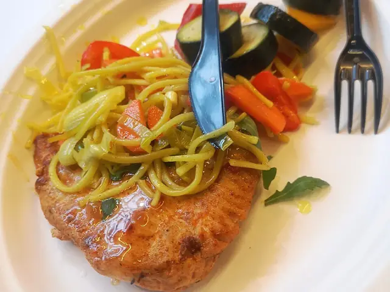

Фото: Silar, CC BY-SA 4.0

Куриная грудка в духовке в фольге
Сочное филе с чесноком и паприкой, запечённое в конверте из фольги
45 мин3 порц.281 ккал на порциюБ 48 · Ж 9 · У 3Интернациональная кухня
Продукты на 3 порц.
- Куриное филе3 шт
- Чеснок2 зуб.
- Паприка1 ч. л.
- Сушёные травы1 ч. л.
- Соль1 ч. л.
- Перец чёрный молотый2 щеп.
- Оливковое масло1 ст. л.
- Лимон по желанию0,3 шт
Как готовить
- Обсушите филе бумажным полотенцем. Смешайте масло, давленый чеснок, паприку, травы, соль и перец.
- Натрите филе смесью со всех сторон и оставьте на 15 минут при комнатной температуре.
- Положите филе на лист фольги, сверху по желанию кружки лимона, плотно заверните конвертом.
- Запекайте при 180 °C (средний жар) 25 минут.
- Достаньте из духовки и не разворачивайте ещё 5 минут. Готовое филе при надрезе белое, сок прозрачный.
Совет. Главное не передержать: крупное филе в 250 г готово за 25-30 минут. Холодная грудка подходит для салатов и бутербродов, хранится 2 дня.